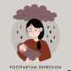

افسردگی بعد از زایمان
1.Tab Sertraline 50mg N=30 Daily
نکته: در صورت نیاز میتوان بصورت هفتگی 25mg تا ماکزیمم دوز 200mg اضافه نمود.
نکته: کمترین ترشح در شیر دارد و در دوران بارداری هم داروی سیفی است.
1️⃣ بیماری های روان
✔️ اختلال دو قطبی
✔️ اسکیزوفرنی
✔️ اختلال اسکیزوافکتیو
✔️ Somatic Symptom Disorders
✔️ سوء مصرف مواد مثل کوکائین
2️⃣ بیماری های CNS
✔️ پارکینسون
✔️ دمانس
✔️ MS
✔️ ضایعات نئوپلاستیک
3️⃣ بیماری های داخلی
✔️ غدد : هایپوتیروئیدیسم ، هایپرتیروئیدیسم ، هایپوگلایسمی
✔️ اوتوایمیون : لوپوس ، سلیاک
✔️ آنمی
✔️ عفونی : مونونوکلئوز ، HIV و...
4️⃣ دارو ها : سرکوب کننده CNS ، استروئید و...
5️⃣ کمبود مواد مغذی : ویتامین B12 ,D
تصویری برای این نسخه موجود نیست.